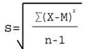
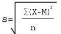

输入所有组数由半角逗号分隔数字","，如: 13,23,12,44,55。常用的计算结果一般为:总体标准偏差及总体标准方差
方差是在概率论和统计方差衡量随机变量或一组数据时离散程度的度量。概率论中方差用来度量随机变量和其数学期望（即均值）之间的偏离程度。统计中的方差（样本方差）是每个样本值与全体样本值的平均数之差的平方值的平均数。在许多实际问题中，研究方差即偏离程度有着重要意义。
方差是衡量源数据和期望值相差的度量值。
标准差（Standard Deviation） ，数学术语，是离均差平方的算术平均数（即：方差）的算术平方根，用σ表示。标准差也被称为标准偏差，或者实验标准差，在概率统计中最常使用作为统计分布程度上的测量依据。 标准差是方差的算术平方根。标准差能反映一个数据集的离散程度。
平均数相同的两组数据，标准差未必相同。
样本标准差计算公式：总体标准差计算公式：差异计算公式：差异 = s2